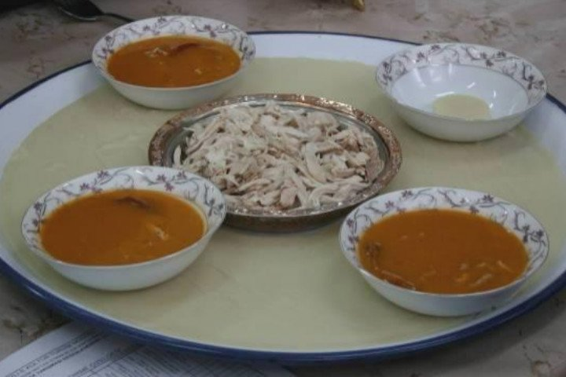

| Home | Locale Dishes | Historical Places | Useful Links | About Me | Contact Me | Registration |
|---|
Kiremit tabaktaki sunumuyla fark yaratır:Keşkek
Aşurelik buğday, nohut ve parça et aynı çömlek içinde buluşup akşamdan fırındaki yolculuğuna gönderilir. O yolculuk ancak sabah sona erecektir. Tahta kaşıkla karıştırılması usulünden olan lezzet, bir de salça, baharat ve yağdan oluşan nefis sosuyla buluşunca damaklara şenlik olur. Şanslıysanız hala aslına uygun kiremit tabaklarda yer, Denizlililerin ne kadar güzel bir lezzete sahip olduklarının farkına varırsınız. Her yerin keşkeği olabilir hatta evinizde de sık sık yapıyor olabilirsiniz ama böylesini hayatınızda yalnızca Denizli'de yiyebilirsiniz.

Marifet kebap kuyusunda: Kuyu kebabı
Yaklaşık 1,5 metre derinliğinde bir kuyuda yapılmasıyla görüp görebileceğiniz bütün kebaplardan kendini ayırmayı başaran kuyu kebabı yapılmadan önce çıralar toplanıp kuyunun içinde yakılıyor. Ardından korların üzerine, içine biraz su koyulan bakır bir tava yerleştiriliyor ve etler kuyuya demir bir çubuk yardımıyla sallandırılıyor. Başka etlerle de yapılabilir olmasına rağmen etin kuzu eti olması makbul sayılıyor. Kuyu kebabı piştikten sonra kuyunun dibindeki bakır tavada biriken yağlar, pilav yapımında ya da doğrudan kebapla birlikte servis edilerek afiyetle tüketiliyor. Yanına piyaz çok yakışıyor.

Bildiğiniz gibi değil: Arabaşı
Biz arabaşı çorbasını biliriz, o da misler gibidir hani laf söyletmeyiz. Ama söz konusu Denizli'nin arabaşı lezzeti olunca durum değişir. Çünkü bu yemeğin aslında tavşan eti kullanılıyor. Bu da onu oldukça özel kılıyor. Etten yapılan çorba, özel olarak hazırlanan hamur ayrı ayrı yerini alır sofralarda. Bir yemek ne kadar bereketliyse o kadar bereketlidir arabaşı da.
